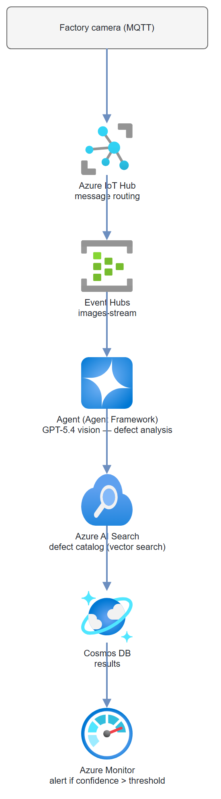

Build it yourself. This project is part of the AI Projects for Cloud Solution Architects portfolio. Full source, code, and the latest updates live in the csa-ai-projects repo on GitHub.
Images from a factory camera floor arrive through IoT Hub. GPT-5.4's vision model checks each one against a defect catalog, writes inspection results to Cosmos DB, and fires an alert when defect confidence crosses a threshold.
What You're Building
A production inspection pipeline using Microsoft Agent Framework (code-based agents in Foundry). Camera images flow through Azure IoT Hub → Event Hubs → an agent that analyzes each image with GPT-5.4 vision, runs a vector search against a defect catalog in Azure AI Search using image embeddings, writes structured inspection results to Cosmos DB, and triggers an Azure Monitor alert on high-confidence defects. Azure Monitor tracks agent latency and defect rates.
Prerequisites
- Microsoft Foundry / Azure AI Services resource with GPT-5.4 and
text-embedding-3-largedeployed - Azure IoT Hub (F1 free tier or S1)
- Azure Event Hubs (connects to IoT Hub routing)
- Azure AI Search (Basic tier, vector search enabled)
- Azure Cosmos DB (inspection-results container)
- Azure Monitor workspace
- Azure CLI logged in (
az login) with Cognitive Services OpenAI User on the AI Services resource and Cosmos DB Built-in Data Contributor on the Cosmos account - Python 3.11+
openai,azure-eventhub,azure-search-documents,azure-cosmos,azure-identity,Pillow
pip install "openai>=1.30.0" azure-identity azure-eventhub \
azure-search-documents azure-cosmos Pillow python-dotenv
Architecture

Step-by-Step Build
Step 1 — IoT Hub and Event Hubs setup
IOT_HUB="quality-inspection-hub"
EH_NAMESPACE="quality-inspection-eh"
EH_NAME="images-stream"
# Create IoT Hub
az iot hub create \
--name $IOT_HUB \
--resource-group $RG \
--sku S1 \
--location eastus2
# Create Event Hubs namespace and hub
az eventhubs namespace create \
--name $EH_NAMESPACE \
--resource-group $RG \
--sku Standard
az eventhubs eventhub create \
--name $EH_NAME \
--namespace-name $EH_NAMESPACE \
--resource-group $RG \
--message-retention 1 \
--partition-count 4
# Route IoT Hub messages to Event Hub
EH_CONN_STR=$(az eventhubs namespace authorization-rule keys list \
--namespace-name $EH_NAMESPACE \
--resource-group $RG \
--name RootManageSharedAccessKey \
--query primaryConnectionString -o tsv)
az iot hub routing-endpoint create \
--hub-name $IOT_HUB \
--resource-group $RG \
--endpoint-name eventhub-images \
--endpoint-type eventhub \
--endpoint-resource-group $RG \
--endpoint-subscription-id $(az account show --query id -o tsv) \
--connection-string $EH_CONN_STR
az iot hub route create \
--hub-name $IOT_HUB \
--resource-group $RG \
--route-name image-route \
--source-type DeviceMessages \
--endpoint-name eventhub-images \
--condition "true" \
--enabled true
Step 2 — Build the defect catalog in AI Search
# index_defect_catalog.py
"""
Index your defect catalog into Azure AI Search with vector embeddings.
Each document represents a known defect type with a description and image.
"""
import os
import json
import base64
from azure.search.documents import SearchClient
from azure.search.documents.indexes import SearchIndexClient
from azure.search.documents.indexes.models import (
SearchIndex, SimpleField, SearchableField,
SearchField, SearchFieldDataType, VectorSearch,
HnswAlgorithmConfiguration, VectorSearchProfile,
SemanticConfiguration, SemanticPrioritizedFields, SemanticField,
SemanticSearch
)
from azure.core.credentials import AzureKeyCredential
from azure.identity import DefaultAzureCredential, get_bearer_token_provider
from openai import AzureOpenAI
SEARCH_ENDPOINT = os.environ["SEARCH_ENDPOINT"]
SEARCH_KEY = os.environ["SEARCH_KEY"]
INDEX_NAME = "defect-catalog"
EMBEDDING_DEPLOYMENT = "text-embedding-3-large"
openai = AzureOpenAI(
azure_endpoint=os.environ["AZURE_OPENAI_ENDPOINT"],
azure_ad_token_provider=get_bearer_token_provider(
DefaultAzureCredential(), "https://cognitiveservices.azure.com/.default"),
api_version="2025-04-01-preview",
)
index_client = SearchIndexClient(
endpoint=SEARCH_ENDPOINT,
credential=AzureKeyCredential(SEARCH_KEY)
)
def create_defect_index():
"""Create the search index with vector search capability."""
index = SearchIndex(
name=INDEX_NAME,
fields=[
SimpleField(name="id", type=SearchFieldDataType.String, key=True),
SearchableField(name="defect_type", type=SearchFieldDataType.String),
SearchableField(name="description", type=SearchFieldDataType.String),
SimpleField(name="severity", type=SearchFieldDataType.String, filterable=True),
SimpleField(name="component", type=SearchFieldDataType.String, filterable=True),
SearchField(
name="description_vector",
type=SearchFieldDataType.Collection(SearchFieldDataType.Single),
searchable=True,
vector_search_dimensions=3072,
vector_search_profile_name="hnsw-profile"
)
],
vector_search=VectorSearch(
algorithms=[HnswAlgorithmConfiguration(name="hnsw-algo")],
profiles=[VectorSearchProfile(
name="hnsw-profile",
algorithm_configuration_name="hnsw-algo"
)]
),
semantic_search=SemanticSearch(
configurations=[SemanticConfiguration(
name="semantic-config",
prioritized_fields=SemanticPrioritizedFields(
content_fields=[SemanticField(field_name="description")]
)
)]
)
)
index_client.create_or_update_index(index)
print(f"Index '{INDEX_NAME}' created/updated")
def embed_text(text: str) -> list[float]:
"""Embed text using text-embedding-3-large."""
response = openai.embeddings.create(
model=EMBEDDING_DEPLOYMENT,
input=text
)
return response.data[0].embedding
def index_defects(defect_catalog: list[dict]):
"""Index defect definitions with embeddings."""
search_client = SearchClient(
endpoint=SEARCH_ENDPOINT,
index_name=INDEX_NAME,
credential=AzureKeyCredential(SEARCH_KEY)
)
docs = []
for defect in defect_catalog:
embedding = embed_text(
f"{defect['defect_type']}: {defect['description']}"
)
docs.append({
"id": defect["id"],
"defect_type": defect["defect_type"],
"description": defect["description"],
"severity": defect["severity"],
"component": defect["component"],
"description_vector": embedding
})
search_client.upload_documents(docs)
print(f"Indexed {len(docs)} defect definitions")
# Sample defect catalog
SAMPLE_DEFECTS = [
{
"id": "scratch-001",
"defect_type": "Surface Scratch",
"description": "Linear scratch on painted surface. Depth <0.1mm. "
"Typically from handling during assembly.",
"severity": "minor",
"component": "outer-casing"
},
{
"id": "crack-001",
"defect_type": "Structural Crack",
"description": "Fracture extending through component wall. Potentially "
"compromises structural integrity. High priority.",
"severity": "critical",
"component": "load-bearing"
},
{
"id": "weld-001",
"defect_type": "Incomplete Weld",
"description": "Weld bead missing coverage over junction. Porosity visible. "
"Strength below specification.",
"severity": "major",
"component": "weld-joint"
}
]
if __name__ == "__main__":
create_defect_index()
index_defects(SAMPLE_DEFECTS)
Step 3 — Quality inspection agent
# inspector_agent.py
import os
import json
import base64
import logging
from datetime import datetime, timezone
from azure.search.documents import SearchClient
from azure.search.documents.models import VectorizedQuery
from azure.core.credentials import AzureKeyCredential
from azure.cosmos import CosmosClient
from azure.identity import DefaultAzureCredential, get_bearer_token_provider
from openai import AzureOpenAI
logger = logging.getLogger("quality-inspector")
SEARCH_ENDPOINT = os.environ["SEARCH_ENDPOINT"]
SEARCH_KEY = os.environ["SEARCH_KEY"]
COSMOS_ENDPOINT = os.environ["COSMOS_ENDPOINT"]
DEFECT_THRESHOLD = float(os.environ.get("DEFECT_THRESHOLD", "0.75"))
credential = DefaultAzureCredential()
openai = AzureOpenAI(
azure_endpoint=os.environ["AZURE_OPENAI_ENDPOINT"],
azure_ad_token_provider=get_bearer_token_provider(
credential, "https://cognitiveservices.azure.com/.default"),
api_version="2025-04-01-preview",
)
cosmos = CosmosClient(url=COSMOS_ENDPOINT, credential=credential)
results_container = cosmos.get_database_client("quality-inspection") \
.get_container_client("inspection-results")
search_client = SearchClient(
endpoint=SEARCH_ENDPOINT,
index_name="defect-catalog",
credential=AzureKeyCredential(SEARCH_KEY)
)
INSPECTION_SCHEMA = {
"type": "json_schema",
"json_schema": {
"name": "inspection_result",
"strict": True,
"schema": {
"type": "object",
"properties": {
"has_defect": {"type": "boolean"},
"defect_type": {"type": "string"},
"defect_location": {"type": "string",
"description": "Describe location in the image"},
"severity": {"type": "string",
"enum": ["none", "minor", "major", "critical"]},
"confidence": {"type": "number",
"description": "0.0 to 1.0"},
"description": {"type": "string"},
"recommended_action": {"type": "string"}
},
"required": ["has_defect", "defect_type", "defect_location",
"severity", "confidence", "description", "recommended_action"],
"additionalProperties": False
}
}
}
def analyze_image(image_b64: str, component_type: str = "unknown") -> dict:
"""Use GPT-5.4 vision to analyze an inspection image."""
response = openai.chat.completions.create(
model="gpt-5.4",
messages=[
{
"role": "system",
"content": (
"You are an expert quality control inspector with 20 years of experience "
"in manufacturing defect detection. Analyze the provided image carefully. "
"Be precise about defect location, type, and severity. "
"A confidence of 1.0 means you are certain there is a defect; "
"0.0 means you are certain there is no defect."
)
},
{
"role": "user",
"content": [
{
"type": "text",
"text": (
f"Inspect this {component_type} for quality defects. "
"Check for: scratches, cracks, dents, misalignment, "
"incomplete welds, contamination, or coating issues."
)
},
{
"type": "image_url",
"image_url": {
"url": f"data:image/jpeg;base64,{image_b64}",
"detail": "high"
}
}
]
}
],
response_format=INSPECTION_SCHEMA,
max_tokens=500,
temperature=0.0
)
return json.loads(response.choices[0].message.content)
def search_similar_defects(description: str, top: int = 3) -> list[dict]:
"""Vector search for similar defects in the catalog."""
embedding_response = openai.embeddings.create(
model="text-embedding-3-large",
input=description
)
query_vector = embedding_response.data[0].embedding
results = search_client.search(
search_text=description,
vector_queries=[
VectorizedQuery(
vector=query_vector,
k_nearest_neighbors=top,
fields="description_vector"
)
],
top=top
)
return [
{
"defect_type": r["defect_type"],
"description": r["description"],
"severity": r["severity"],
"score": r["@search.score"]
}
for r in results
]
def save_inspection_result(
inspection_id: str,
device_id: str,
component_type: str,
vision_result: dict,
catalog_matches: list[dict],
image_url: str = ""
) -> dict:
"""Write inspection result to Cosmos DB."""
doc = {
"id": inspection_id,
"device_id": device_id,
"component_type": component_type,
"inspected_at": datetime.now(timezone.utc).isoformat(),
"has_defect": vision_result["has_defect"],
"defect_type": vision_result["defect_type"],
"defect_location": vision_result["defect_location"],
"severity": vision_result["severity"],
"confidence": vision_result["confidence"],
"description": vision_result["description"],
"recommended_action": vision_result["recommended_action"],
"catalog_matches": catalog_matches,
"image_url": image_url
}
results_container.upsert_item(doc)
return doc
def send_azure_monitor_alert(inspection_result: dict):
"""
Emit a custom metric to Azure Monitor.
In production, use azure-monitor-ingestion SDK + Data Collection Endpoint.
"""
# Simple approach: log as structured error for Log Analytics to pick up
logger.error(
"DEFECT_DETECTED",
extra={
"inspection_id": inspection_result["id"],
"device_id": inspection_result["device_id"],
"defect_type": inspection_result["defect_type"],
"severity": inspection_result["severity"],
"confidence": inspection_result["confidence"]
}
)
# In production: use azure-monitor-ingestion to send to a DCE/DCR
def inspect(
image_b64: str,
inspection_id: str,
device_id: str,
component_type: str = "unknown"
) -> dict:
"""Full inspection pipeline for one image."""
logger.info(f"Inspecting {inspection_id} from device {device_id}")
# Step 1: Vision analysis
vision_result = analyze_image(image_b64, component_type)
# Step 2: Vector search for similar defects
catalog_matches = []
if vision_result["has_defect"]:
catalog_matches = search_similar_defects(vision_result["description"])
# Step 3: Save to Cosmos DB
result = save_inspection_result(
inspection_id=inspection_id,
device_id=device_id,
component_type=component_type,
vision_result=vision_result,
catalog_matches=catalog_matches
)
# Step 4: Alert if high confidence defect
if (vision_result["has_defect"] and
vision_result["confidence"] >= DEFECT_THRESHOLD):
logger.warning(
f"High-confidence defect: {vision_result['defect_type']} "
f"(confidence={vision_result['confidence']:.2f})"
)
send_azure_monitor_alert(result)
return result
Step 4 — Event Hub consumer
# consumer.py
import os
import json
import base64
import asyncio
import logging
import uuid
from azure.eventhub.aio import EventHubConsumerClient
from inspector_agent import inspect
EH_CONN_STR = os.environ["EVENT_HUB_CONNECTION_STRING"]
EH_NAME = os.environ.get("EVENT_HUB_NAME", "images-stream")
CONSUMER_GROUP = "$Default"
logging.basicConfig(level=logging.INFO)
logger = logging.getLogger("consumer")
async def process_event(partition_context, event):
"""Process one Event Hub message containing an inspection image."""
try:
payload = json.loads(event.body_as_str())
device_id = payload.get("device_id", "unknown")
component_type = payload.get("component_type", "unknown")
image_b64 = payload.get("image_b64") # base64-encoded JPEG
if not image_b64:
logger.warning(f"No image in message from {device_id}, skipping")
return
inspection_id = str(uuid.uuid4())
result = inspect(
image_b64=image_b64,
inspection_id=inspection_id,
device_id=device_id,
component_type=component_type
)
logger.info(
f"Inspection {inspection_id}: defect={result['has_defect']} "
f"confidence={result['confidence']:.2f} severity={result['severity']}"
)
await partition_context.update_checkpoint(event)
except Exception as e:
logger.error(f"Error processing event: {e}", exc_info=True)
async def main():
client = EventHubConsumerClient.from_connection_string(
EH_CONN_STR,
consumer_group=CONSUMER_GROUP,
eventhub_name=EH_NAME
)
async with client:
await client.receive(
on_event=process_event,
starting_position="-1" # Start from latest
)
if __name__ == "__main__":
asyncio.run(main())
Test It
Simulate an IoT device sending an image:
# simulate_device.py
import os, json, base64, uuid
from azure.eventhub import EventHubProducerClient, EventData
from PIL import Image, ImageDraw
import io
def create_test_image_with_scratch() -> str:
"""Create a synthetic test image with a visible scratch."""
img = Image.new("RGB", (640, 480), color=(200, 200, 200))
draw = ImageDraw.Draw(img)
# Draw a "scratch"
draw.line([(100, 150), (300, 200)], fill=(50, 50, 50), width=3)
buffer = io.BytesIO()
img.save(buffer, format="JPEG")
return base64.b64encode(buffer.getvalue()).decode()
producer = EventHubProducerClient.from_connection_string(
os.environ["EVENT_HUB_CONNECTION_STRING"],
eventhub_name="images-stream"
)
with producer:
batch = producer.create_batch()
batch.add(EventData(json.dumps({
"device_id": "camera-line-3",
"component_type": "outer-casing",
"image_b64": create_test_image_with_scratch()
})))
producer.send_batch(batch)
print("Test image sent to Event Hub")
# Start the consumer in one terminal
python consumer.py
# Send test image in another
python simulate_device.py
Check Cosmos DB for the inspection result:
az cosmosdb sql query \
--account-name $COSMOS_ACCOUNT --resource-group $RG \
--database-name quality-inspection --container-name inspection-results \
--query-text "SELECT c.has_defect, c.defect_type, c.confidence, c.severity FROM c ORDER BY c.inspected_at DESC OFFSET 0 LIMIT 5"
Common Mistakes
- Image too large for GPT-5.4 vision. Resize to 1024x768 before base64-encoding. Full 4K images add latency without proportional accuracy gains for defect detection.
- Event Hub checkpoint not updated on failure. Always call
update_checkpointonly after successful processing. On failure, let the event replay on the next consumer restart. - Cosmos DB throughput throttling. On Serverless, you're limited to bursts. If camera frame rate is high (>10 FPS), use Provisioned Throughput (400+ RU/s) and batch writes.
Extend It
- Training feedback loop: Add a
human_verifiedfield to inspection results. Have quality engineers review flagged images and mark them correct/incorrect. Use these labels to fine-tune prompts monthly. - Real-time dashboard: Stream inspection results from Cosmos DB Change Feed to a SignalR-backed dashboard showing live defect rate per production line.
- Predictive maintenance: Aggregate defect patterns by machine ID and timestamp. If defect rate on a specific machine spikes over a 4-hour window, trigger a maintenance work order automatically.